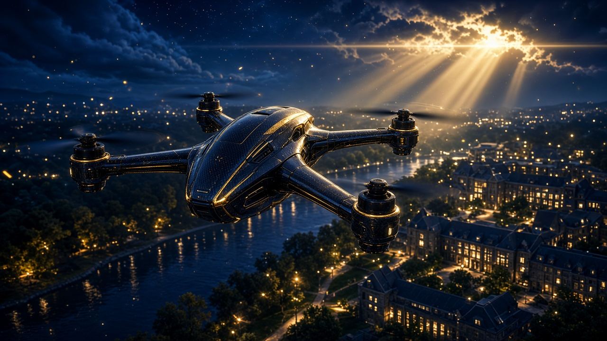
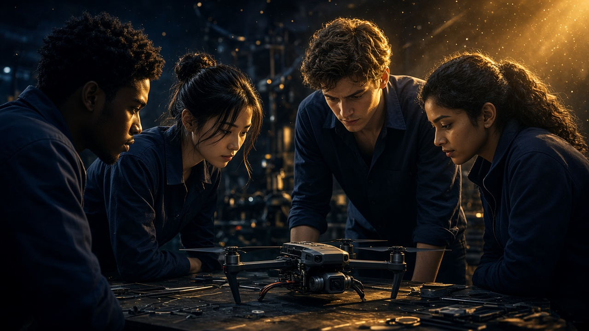

Student-built autonomous drones for real missions.
LARC is a University of Windsor engineering club. We design, simulate and fly autonomous quadcopters — including drone control with reinforcement learning — to compete in the AEAC Student UAS Competition and RoboSub.

About LARC
Practical robotics experience, from first year to graduate school.
LARC gives Mechatronics and related disciplines hands-on experience in robotics, systems integration and aerial vehicle design. Our objective is to represent the University of Windsor at international autonomous competitions.
- No experience required. Tasks scale beginner → advanced.
- Monthly general meetings, weekly subteam standups. Term Sept 1 – Aug 31.
- Inclusive membership. Open to all UWindsor undergraduates and graduates, per UWSA policy.
Official UWindsor / UWSA / LARC crest use requires written Executive Board sign-off.

Year 1 — Foundation year
Non-competition year while workshop, hardware and funding are secured. Two deliverables:
- Phase 1 Technical Design Proposal (≤15 pages, WARG format)
- Physics-based digital twin — autonomous quadcopter in Gazebo
Wk 3 — Setup Wk 6 — Schematics + Sim Wk 10 — Waypoints + Safety
Research focus
Drones + reinforcement learning for autonomous flight
Alongside classical PID and ArduPilot, LARC maintains a reinforcement-learning track for drone control. Students train policies in simulation first, then transfer to the physical aircraft in Year 2.
1. Learn in simulation
Gazebo + ROS 2 + Gym interface. PPO for hover, waypoint tracking and transect flight. Reward shaping for energy, stability and coverage.
PPO Gazebo ROS 2
2. Perceive the mission
OpenCV wildlife counting, KML mapping and ground-station overlays. RL agents use visual + telemetry state for search and tagging.
OpenCV KML Raspberry Pi 5
3. Fly safely
Safety-constrained RL, kill-switch override, airspace deconfliction and Transport Canada safety manual compliance.
ArduPilot MAVLink Safety
Leadership
Executive team and subteams
Executive team — founding officers for 2026–2027.
Lucas Mark
President
Adam El Hajj
Vice President
Lukas Waller
Treasurer
Electrical & Avionics
PCBs, power budget, kill switch, wiring harness, lighting.
Mechanical & Airframe
CAD airframe, balance analysis, sensor mounts, landing gear, wildlife tagger, ground sampler.
Controls & Autonomy — incl. RL
ROS 2, Gazebo, ArduPilot, MAVLink, PID tuning + reinforcement-learning policies for waypoint and search tasks.
Software & Flight
OpenCV counting, ground station, KML mapping, safety manual, Raspberry Pi 5, automated testing.
Business & Admin (proposal, sponsorship, website, budget) supports all teams.
Simulation showcase
One thousand simulated missions before one takeoff.
ROS 2 autonomy stack. Mission planning, telemetry, deconfliction nodes. Built via Teams board tasks.
RL training pipeline. PPO in Gazebo, domain randomisation (wind, mass, latency), sim-to-real checks before Year 2 flight.
OpenCV + KML. Aerial wildlife counting and judge-ready map export from the ground station.
Safety. Transport Canada manual, HITL testing on Raspberry Pi 5, CI automated tests.
Competitions
AEAC 2027 wildlife mission. Then RoboSub.
18th Annual AEAC Student UAS Competition, May 14–16, 2027, Medicine Hat, Alberta — wildlife surveying, tracking and tagging. LARC engineers to the same criteria in Year 1; physical build and flight in Year 2.
- Autonomous takeoff → transect → tag → return-to-launch
- Live telemetry + KML herd map
- RL-assisted search patterns evaluated in sim
Sponsors
Help us take flight.
Donations are tax-deductible via the University of Windsor Students' Alliance (UWSA). Contact: Lukas Waller (Treasurer) — larc.uwindsor@gmail.com.
Flight Support
$500
- Small logo on drone
- Website + newsletter
Altitude Achiever
$1,000
- Medium logo on drone
- Apparel + banner
10K FT
$2,500
- Large logo: drone, banner
- Apparel + ground equipment
Champion
$10,000
- 18×24 poster, Industrial Courtyard
- Photo ops + max placement
Become a sponsor Logo use requires Executive Board sign-off.
Contact / Join
Talk to the team.
Membership, sponsorship, media or sim tours — email larc.uwindsor@gmail.com. Replies within 2–3 days during term.
We are accepting resumes. Attach your resume below for any subteam — including the drone reinforcement-learning track. PDF or DOC, max 5 MB.
Lancer Autonomous Robotics Club, University of Windsor, Windsor ON.
Ratified 2026–2027.